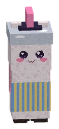

Story bossVerhaalbaas
A story boss: click to showEen verhaalbaas: klik om te kijken

Mechanics
Vijf Wolkwachters? Eén is hem: zoek de ZILVEREN glinster bij de staart. Een lokpop raken kost je wat Vads.
Kootje Zilverstaart
Ontsnapt hij? Draai de drie grauwgasventielen dicht (rechtsklik, 3x).
Named lootBenoemde buit
- Mantel der Vermommingen 10% legendarisch
- Zilverstaarts Hoedenspeld 12% legendarisch
All dropsAlle buit
Every helper (at least 5% of the work) gets their own chest; the chances below are per player.
Elke helper (minstens 5% van het werk) krijgt een eigen kist; de kansen hieronder zijn per speler.
AlsoOok
| KindSoort | WhatWat | ChanceKans |
|---|---|---|
| PetHuisdier | Lokpopje | Versla Kootje Zilverstaart. |
| TrophyTrofee | Zilveren Staartpunt | sure, on your first win (decoration for home)zeker, bij je eerste overwinning (deco voor thuis) |
PetHuisdier
Lokpopje: Een van Zilverstaarts lokpoppen. Hij wil nu bij jou horen. Versla Kootje Zilverstaart.
Hidden by your spoiler setting.Verborgen door je spoilerinstelling.